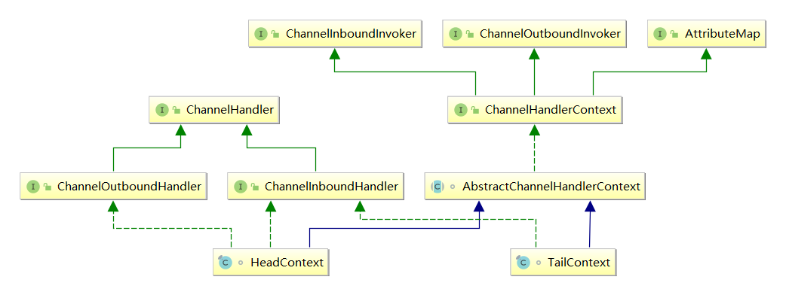
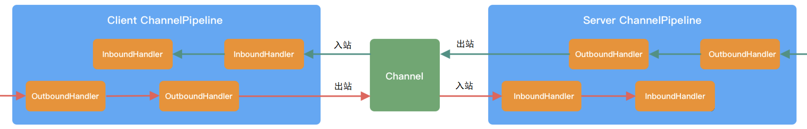
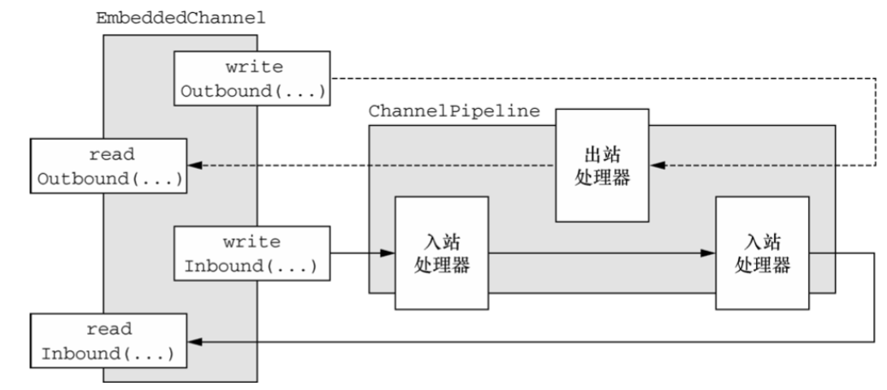
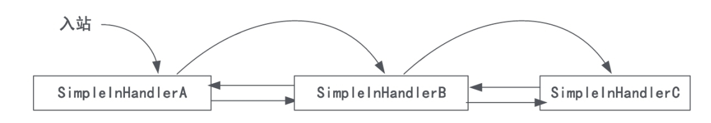
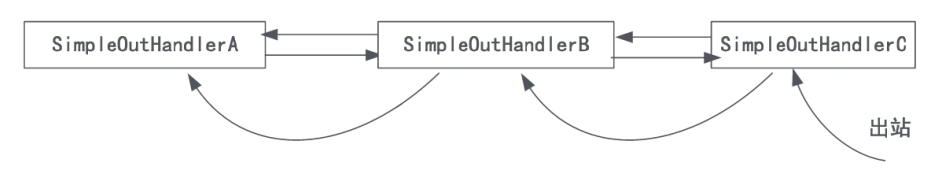
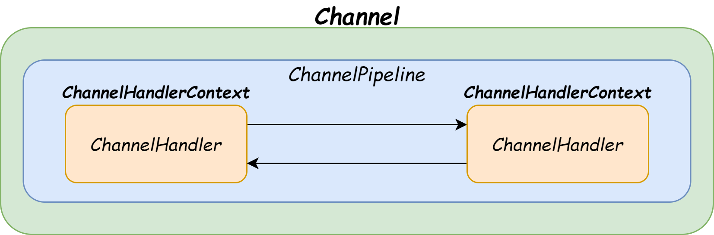
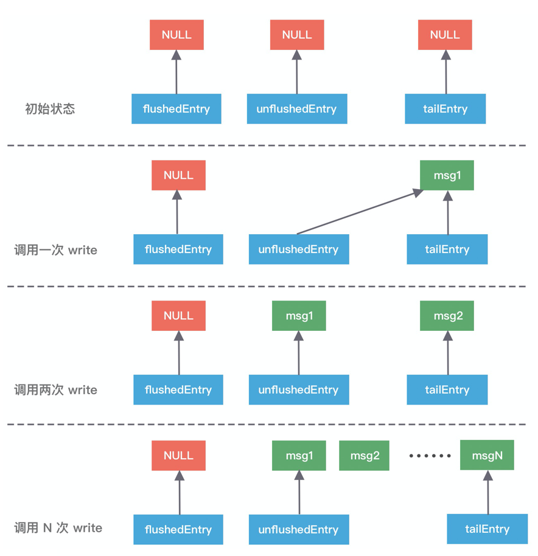
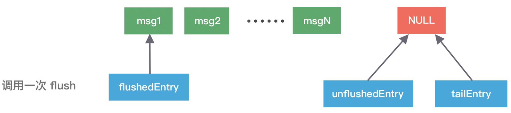
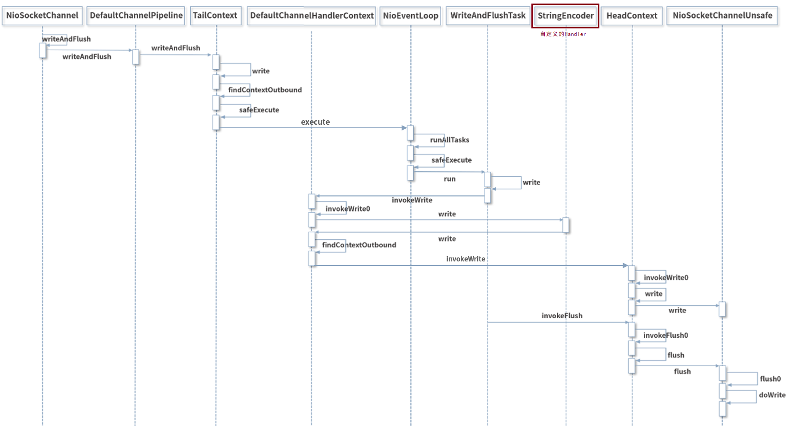

透彻理解Java网络编程（十二）——Netty原理：ChannelPipeline和ChannelHandler
EventLoop 虽然是 Netty 的调度中心，负责监听各类事件：I/O 事件、信号事件、定时事件等，但与我们实际开发最息息相关的却是ChannelPipeline和ChannelHandler。
这一节，我就对Netty中的这两个组件进行深入分析。
一、ChannelPipeline
Netty的流水线ChannelPipeline用以实现网络事件的动态编排和有序传播，基于责任链设计模式（Chain of Responsibility）设计，内部是一个双向链表结构，支持动态地添加和删除ChannelHandler业务处理器。
1.1 内部结构
Channel、ChannelPipeline、ChannelHandlerContext、ChannelHandler四者的关系可以用下面这张图表示：

- 每个 Channel 会绑定一个 ChannelPipeline，Pipeline初始化时有Head和Tail两个节点；
- 每个 ChannelPipeline 包含多个 ChannelHandlerContext，所有 ChannelHandlerContext 之间组成了双向链表；
- 每个 ChannelHandler 都对应一个 ChannelHandlerContext。
这里为什么需要多一层 ChannelHandlerContext 对ChannelHandler进行封装呢？
因为如果没有 ChannelHandlerContext 的这层封装，那我们在 ChannelHandler 之间传递事件时，前置后置的通用逻辑就要在每个 ChannelHandler 里都实现一份。而定义ChannelHandlerContext，可以将 ChannelHandler 生命周期的所有事件，如 connect、bind、read、flush、write、close 等都抽取出来，减少代码耦合。
我们再从源码层面看下 ChannelPipeline 双向链表的构造。
ChannelPipeline 的双向链表分别维护了
HeadContext 头节点和 TailContext 尾节点。我们自定义的 ChannelHandler 会插入到 Head 和 Tail 之间，HeadContext 和 TailContext 的继承关系如下图：
从上述类图，我们可以看出以下关键几点：
- HeadContext 既是 Inbound 处理器，也是 Outbound 处理器，它分别实现了 ChannelInboundHandler 和 ChannelOutboundHandler；
- HeadContext 作为 Pipeline 的头结点，负责读取数据并开始传递 InBound 事件，当数据处理完成后，数据会反方向经过 Outbound 处理器，最终传递到 HeadContext。所以，HeadContext 又是处理 Outbound 事件的最后一站；
- TailContext 只是 Inbound 处理器，它只实现了 ChannelInboundHandler 接口；
- TailContext 作为 Pipeline 的尾结点，会在 ChannelInboundHandler 调用链路的最后一步执行，用于终止 Inbound 事件传播。同时，TailContext 节点作为 OutBound 事件传播的第一站，会将 OutBound 事件传递给上一个节点。
正式因为这样的设计，如果由 Channel 直接触发事件传播，那么调用链路将贯穿整个 ChannelPipeline。如果由某个 ChannelHandlerContext 触发，则只会从当前的 ChannelHandler 开始执行事件传播，该过程不会从头贯穿到尾，在一定场景下，可以提高程序性能。
1.2 出/入站处理
根据网络数据的流向，ChannelPipeline 包含入站 ChannelInboundHandler 和出站 ChannelOutboundHandler 两种处理器。
客户端与服务端通信时，数据从客户端发向服务端的过程叫出站，反之称为入站。数据先由一系列 InboundHandler 处理后入站，然后再由相反方向的 OutboundHandler 处理完成后出站，如下图所示：

比如，我们经常使用的解码器 Decoder 就是入站操作，编码器 Encoder 就是出站操作。
这里补充一下，Netty默认提供了一个EmbeddedChannel，模拟入站与出站的操作，底层不进行实际的传输，不需要启动Netty服务器和客户端，常常用于测试。EmbeddedChannel提供了一组方法，可以分别模拟客户端和服务端的出入站操作：
| 方法名称 | 说明 |
|---|---|
| writeInbound | 向Channel写入Inbound入站数据，这些数据会在Pipeline上经过入站处理器依次处理 |
| readInbound | 从Chanel读取Inbound入站数据，返回Pipeline上最后一个入站处理器处理后的数据 |
| readOutbound | 从Channel读取Outbound出站数据，返回Pipeline上最后一个出站处理器处理后的数据 |
| writeOutbound | 向Channel写入Outbound出站数据，这些数据会在Pipeline上经过出站处理器依次处理 |
我们通过一张图来理解下：

下面，我通过示例来讲解下ChannelPipeline对出入站事件的处理。
入站处理流程
我们先通过一个示例来理解下ChannelPipeline的入站处理流程：
public class InboundDemo {
static class SimpleInHandlerA extends ChannelInboundHandlerAdapter {
@Override
public void channelRead(ChannelHandlerContext ctx, Object msg) throws Exception {
System.out.println("入站处理器A: 被回调: " + msg);
super.channelRead(ctx, msg);
}
}
static class SimpleInHandlerB extends ChannelInboundHandlerAdapter {
@Override
public void channelRead(ChannelHandlerContext ctx, Object msg) throws Exception {
System.out.println("入站处理器B: 被回调: " + msg);
super.channelRead(ctx, msg);
}
}
static class SimpleInHandlerC extends ChannelInboundHandlerAdapter {
@Override
public void channelRead(ChannelHandlerContext ctx, Object msg) throws Exception {
System.out.println("入站处理器C: 被回调: " + msg);
super.channelRead(ctx, msg);
}
}
public static void main(String[] args) {
testInboud();
}
public static void testInboud() {
ChannelInitializer channelInitializer = new ChannelInitializer<EmbeddedChannel>() {
@Override
protected void initChannel(EmbeddedChannel ch) throws Exception {
ch.pipeline().addLast(new SimpleInHandlerA());
ch.pipeline().addLast(new SimpleInHandlerB());
ch.pipeline().addLast(new SimpleInHandlerC());
}
};
EmbeddedChannel channel = new EmbeddedChannel(channelInitializer);
ByteBuf buf = Unpooled.buffer();
buf.writeInt(90);
channel.writeInbound(buf);
}
}
上面代码中，我创建了三个入站处理器，然后向Channel写入数据，触发一个read入站事件，执行结果如下：
入站处理器A: 被回调
入站处理器B: 被回调
入站处理器C: 被回调
注意，我在每个Handler内部都调用了父类ChannelInboundHandlerAdapter的channelRead方法，就是为了在Pipeline中传递事件，当然我们也可以直接调用ChannelHandlerContext.fireChannelRead方法：
// ChannelInboundHandlerAdapter.java
public void channelRead(ChannelHandlerContext ctx, Object msg) throws Exception {
ctx.fireChannelRead(msg);
}

如果不调用
super.channelRead(ctx, msg);，则事件不会向后传播。
出站处理流程
我们再来通过一个示例来理解下ChannelPipeline的出站处理流程：
public class OutboundDemo {
static class SimpleOutHandlerA extends ChannelOutboundHandlerAdapter {
@Override
public void write(ChannelHandlerContext ctx, Object msg, ChannelPromise promise) throws Exception {
System.out.println("出站处理器A: 被回调 ");
super.write(ctx, msg, promise);
}
}
static class SimpleOutHandlerB extends ChannelOutboundHandlerAdapter {
@Override
public void write(ChannelHandlerContext ctx, Object msg, ChannelPromise promise) throws Exception {
System.out.println("出站处理器B: 被回调 ");
super.write(ctx, msg, promise);
}
}
static class SimpleOutHandlerC extends ChannelOutboundHandlerAdapter {
@Override
public void write(ChannelHandlerContext ctx, Object msg, ChannelPromise promise) throws Exception {
System.out.println("出站处理器C: 被回调 ");
super.write(ctx, msg, promise);
}
}
public static void main(String[] args) {
testOutboud();
}
public static void testOutboud() {
ChannelInitializer channelInitializer = new ChannelInitializer<EmbeddedChannel>() {
@Override
protected void initChannel(EmbeddedChannel ch) throws Exception {
ch.pipeline().addLast(new SimpleOutHandlerA());
ch.pipeline().addLast(new SimpleOutHandlerB());
ch.pipeline().addLast(new SimpleOutHandlerC());
}
};
EmbeddedChannel channel = new EmbeddedChannel(channelInitializer);
ByteBuf buf = Unpooled.buffer();
buf.writeInt(90);
channel.writeOutbound(buf);
}
}
上面代码中，我创建了三个出站处理器，然后向Channel写入数据，触发一个write出站事件，执行结果如下：
出站处理器C: 被回调
出站处理器B: 被回调
出站处理器A: 被回调
注意，我在每个Handler内部都调用了父类ChannelOutboundHandlerAdapter的write方法，就是为了在Pipeline中传递事件，当然我们也可以直接调用ChannelHandlerContext.writeAndFlush方法。
这里还要特别注意下，出站处理次序为从后向前，最后加入的出站处理器，反而执行在最前面，如下图：

1.3 ChannelHandlerContext
在Handler业务处理器被添加到Pipeline中时，会创建一个ChannelHandlerContext对象，它代表了ChannelHandler业务处理器和ChannelPipeline流水线之间的关联。
我们在处理出/入站事件时，如果通过Channel或ChannelPipeline来直接调用事件方法，则事件会在整条流水线中传播。然而，如果是通过ChannelHandlerContext进行调用，就只会从当前的节点开始执行Handler业务处理器，并传播到同类型处理器的下一站（节点）。

1.4 writeAndFlush原理
服务端在接收到客户端的请求后，需要将响应结果编码后写回客户端。这个过程一般是通过ChannelPipeline.writeAndFlush方法完成的。事实上，writeAndFlush 主要分为两个步骤，write 和 flush：
- write：将待发送数据从Pipeline的Tail节点（或者当前Context节点）向前传播，直到Head节点，并写入其内部的ChannelOutboundBuffer（一个单向链表缓存区）；
- flush：将ChannelOutboundBuffer中的数据写到TCP发送缓冲区，如果ChannelOutboundBuffer的数据全部flush完，则取消对
OP_WRITE事件的关注。
我们先来看当调用ChannelPipeline.writeAndFlush方法的整体流程：
// DefaultChannelPipeline.java
final AbstractChannelHandlerContext tail;
public final ChannelFuture writeAndFlush(Object msg) {
return tail.writeAndFlush(msg);
}
// AbstractChannelHandlerContext.java
public ChannelFuture writeAndFlush(Object msg) {
return writeAndFlush(msg, newPromise());
}
public ChannelFuture writeAndFlush(Object msg, ChannelPromise promise) {
write(msg, true, promise);
return promise;
}
private void write(Object msg, boolean flush, ChannelPromise promise) {
//...
// 找到Pipeline链表中下一个Outbound类型的ChannelHandler节点
final AbstractChannelHandlerContext next = findContextOutbound(flush ?
(MASK_WRITE | MASK_FLUSH) : MASK_WRITE);
final Object m = pipeline.touch(msg, next);
EventExecutor executor = next.executor();
// 判断当前线程是否是NioEventLoop中的工作线程
if (executor.inEventLoop()) {
if (flush) { // 因为flush == true，所以流程走到这里
next.invokeWriteAndFlush(m, promise);
} else {
next.invokeWrite(m, promise);
}
} else {
final WriteTask task = WriteTask.newInstance(next, m, promise, flush);
if (!safeExecute(executor, task, promise, m, !flush)) {
task.cancel();
}
}
}
上述的AbstractChannelHandlerContext.write方法，执行逻辑如下：
- 调用
findContextOutbound方法找到 Pipeline 链表中的下一个 Outbound 类型的 ChannelHandler； - 通过
inEventLoop方法判断当前线程是否为NioEventLoop中的工作线程，如果是则立即执行，否则封装成一个Task任务扔到 EventLoop 的任务队列中，稍后执行； - 因为 flush == true，所以直接执行
next.invokeWriteAndFlush(m, promise)这行代码，它的执行分两步：- 先执行write操作，即调用下一个 ChannelHandler 节点的 write 方法；
- 再执行flush操作，真正将数据从底层的SocketChannel发送到对端。
// AbstractChannelHandlerContext.java
void invokeWriteAndFlush(Object msg, ChannelPromise promise) {
if (invokeHandler()) {
// 1.write流程
invokeWrite0(msg, promise);
// 2.flush流程（后面分析）
invokeFlush0();
} else {
writeAndFlush(msg, promise);
}
}
可以看出，Netty 的 Pipeline 设计非常精妙，调用 writeAndFlush 时数据是在 Outbound 类型的 ChannelHandler 节点之间进行传播，直到 Head 节点结束，最终数据由 Head 节点调用底层的SocketChannel完成发送。
write流程
我们先来看write流程，也就是AbstractChannelHandlerContext的invokeWrite0方法：
// AbstractChannelHandlerContext.java
private void invokeWrite0(Object msg, ChannelPromise promise) {
try {
// 调用ChannelHandler的write方法
((ChannelOutboundHandler) handler()).write(this, msg, promise);
} catch (Throwable t) {
notifyOutboundHandlerException(t, promise);
}
}
很简单，就是调用前一个ChannelHandler的write方法，层层递进直到Head节点，所以我们直接看Head 节点的 write 方法源码：
// HeadContext.java
private final Unsafe unsafe;
public void write(ChannelHandlerContext ctx, Object msg, ChannelPromise promise) {
unsafe.write(msg, promise);
}
可以看出，Head 节点是通过调用 Unsafe 对象完成数据写入的，Unsafe 对应的是NioSocketChannelUnsafe对象实例，内部最终调用到 AbstractChannel.AbstractUnsafe.write() 方法：
// AbstractChannel.AbstractUnsafe.java
public final void write(Object msg, ChannelPromise promise) {
assertEventLoop();
ChannelOutboundBuffer outboundBuffer = this.outboundBuffer;
if (outboundBuffer == null) {
try {
ReferenceCountUtil.release(msg);
} finally {
safeSetFailure(promise, newClosedChannelException(initialCloseCause, "write(Object, ChannelPromise)"));
}
return;
}
int size;
try {
// 过滤消息
msg = filterOutboundMessage(msg);
size = pipeline.estimatorHandle().size(msg);
if (size < 0) {
size = 0;
}
} catch (Throwable t) {
try {
ReferenceCountUtil.release(msg);
} finally {
safeSetFailure(promise, t);
}
return;
}
// 向Buffer中添加数据
outboundBuffer.addMessage(msg, size, promise);
}
上述方法有两个重要的点需要指出：
filterOutboundMessage方法会对待写入的 msg 进行过滤，如果 msg 使用的不是 DirectByteBuf，那么它会将 msg 转换成 DirectByteBuf；- ChannelOutboundBuffer 可以理解为一个缓存结构，源码最后一行
outboundBuffer.addMessage是在向这个缓存中添加数据，也就是说调用AbstractUnsafe.write方法只是将数据存储在 ChannelOutboundBuffer 的缓存内，而 ChannelOutboundBuffer 才是理解数据发送的关键。
下面我们重点分析一下 ChannelOutboundBuffer 的内部构造：
// ChannelOutboundBuffer.java
private Entry flushedEntry;
private Entry unflushedEntry;
private Entry tailEntry;
public void addMessage(Object msg, int size, ChannelPromise promise) {
// 将数据包装成Entry节点，入链表
Entry entry = Entry.newInstance(msg, size, total(msg), promise);
if (tailEntry == null) {
flushedEntry = null;
} else {
Entry tail = tailEntry;
tail.next = entry;
}
tailEntry = entry;
if (unflushedEntry == null) {
unflushedEntry = entry;
}
// 判断缓存水位线
incrementPendingOutboundBytes(entry.pendingSize, false);
}
ChannelOutboundBuffer是一个单向链表结构，每次传入的数据都会被封装成一个 Entry 对象添加到链表中。ChannelOutboundBuffer 包含三个非常重要的指针：
- 已经被flush到底层Socket缓冲区的节点 flushedEntry；
- 第一个未被flush到底层Socket缓冲区的节点 unflushedEntry；
- 最后一个节点 tailEntry。
在初始状态下这三个指针都指向 NULL，当我们每次调用 write 方法时，都会调用 addMessage 方法改变这三个指针的指向，可以参考下图理解指针的移动过程：

上图中：
- 第一次调用 write，因为链表里没有数据，所以 unflushedEntry 和 tailEntry 指针都指向第一个添加的数据 msg1。flushedEntry 指针在没有触发 flush 动作时会一直指向 NULL；
- 第二次调用 write，tailEntry 指针会指向新加入的 msg2（链表的尾插法）；
- 第 N 次调用 write，tailEntry 指针会不断指向新加入的 msgN，unflushedEntry 和 tailEntry 指针之间的数据都是未flush入Socket缓冲区的。
由于内存容量有限，所以addMessage方法每次写入数据后都会调用incrementPendingOutboundBytes方法判断缓存的水位线，具体源码如下：
// ChannelOutboundBuffer.java
private static final int DEFAULT_LOW_WATER_MARK = 32 * 1024; // 低水位线32Kb
private static final int DEFAULT_HIGH_WATER_MARK = 64 * 1024; // 高水位线64Kb
private void incrementPendingOutboundBytes(long size, boolean invokeLater) {
if (size == 0) {
return;
}
long newWriteBufferSize = TOTAL_PENDING_SIZE_UPDATER.addAndGet(this, size);
if (newWriteBufferSize > channel.config().getWriteBufferHighWaterMark()) {
setUnwritable(invokeLater);
}
}
上述incrementPendingOutboundBytes方法的逻辑非常简单，每次添加数据时都会累加已缓存的总数据字节数，然后判断大小是否超过所设置的高水位线（默认64KB），如果超过则底层的SocketChannel会被设置为不可写状态（取消对OP_WRITE事件的监听），直到缓存数据大小低于低水位线（默认32KB）后，SocketChannel才恢复成可写状态。
至此，整个write流程就结束了，下面回到flush流程。
flush流程
回到AbstractChannelHandlerContext的invokeFlush0方法，内部调用了上一个ChannelHandler的flush方法，同样会从 Tail 节点开始传播到 Head 节点：
// AbstractChannelHandlerContext.java
private void invokeFlush0() {
try {
// 调用上一个ChannelHandler的flush方法
((ChannelOutboundHandler) handler()).flush(this);
} catch (Throwable t) {
invokeExceptionCaught(t);
}
}
我们跟进下 HeadContext 的 flush 源码：
// HeadContext.java
private final Unsafe unsafe;
public void flush(ChannelHandlerContext ctx) {
unsafe.flush();
}
内部调用AbstractChannel.AbstractUnsafe.flush方法：
// AbstractChannel
public final void flush() {
assertEventLoop();
ChannelOutboundBuffer outboundBuffer = this.outboundBuffer;
if (outboundBuffer == null) {
return;
}
outboundBuffer.addFlush();
flush0();
}
可以看出 flush 的核心逻辑主要分为两个步骤：addFlush 和 flush0，下面我们逐一对它们进行分析。
首先看下 addFlush 方法的源码：
// ChannelOutboundBuffer.java
public void addFlush() {
Entry entry = unflushedEntry;
if (entry != null) {
if (flushedEntry == null) {
flushedEntry = entry;
}
do {
flushed ++;
if (!entry.promise.setUncancellable()) {
int pending = entry.cancel();
// 减去待发送的数据，如果总字节数低于低水位，那么 Channel 将变为可写状态
decrementPendingOutboundBytes(pending, false, true);
}
entry = entry.next;
} while (entry != null);
unflushedEntry = null;
}
}
上述方法同样会操作 ChannelOutboundBuffer 中的缓存数据，此时 flushedEntry 指针有所改变，变更为unflushedEntry 指针所指向的数据，然后 unflushedEntry 指针指向 NULL，flushedEntry 指针指向的数据会被真正发送到 Socket 缓冲区，如下图：

接着再来看下 flush0 方法的源码：
// AbstractChannelHandlerContext.java
protected void flush0() {
if (inFlush0) {
return;
}
final ChannelOutboundBuffer outboundBuffer = this.outboundBuffer;
if (outboundBuffer == null || outboundBuffer.isEmpty()) {
return;
}
inFlush0 = true;
if (!isActive()) {
try {
if (!outboundBuffer.isEmpty()) {
if (isOpen()) {
outboundBuffer.failFlushed(new NotYetConnectedException(), true);
} else { outboundBuffer.failFlushed(newClosedChannelException(initialCloseCause, "flush0()"), false);
}
}
} finally {
inFlush0 = false;
}
return;
}
try {
doWrite(outboundBuffer);
} catch (Throwable t) {
handleWriteError(t);
} finally {
inFlush0 = false;
}
}
flush0 的实际调用层次很深，但其实核心的逻辑在于doWrite 方法：
// NioSocketChannel.java
protected void doWrite(ChannelOutboundBuffer in) throws Exception {
// Java NIO的SocketChannel
SocketChannel ch = javaChannel();
int writeSpinCount = config().getWriteSpinCount();
do {
if (in.isEmpty()) {
clearOpWrite();
return;
}
int maxBytesPerGatheringWrite = ((NioSocketChannelConfig)config).getMaxBytesPerGatheringWrite();
ByteBuffer[] nioBuffers = in.nioBuffers(1024, maxBytesPerGatheringWrite);
int nioBufferCnt = in.nioBufferCount();
switch (nioBufferCnt) {
case 0:
writeSpinCount -= doWrite0(in);
break;
case 1: {
ByteBuffer buffer = nioBuffers[0];
int attemptedBytes = buffer.remaining();
final int localWrittenBytes = ch.write(buffer);
if (localWrittenBytes <= 0) {
incompleteWrite(true);
return;
}
adjustMaxBytesPerGatheringWrite(attemptedBytes, localWrittenBytes, maxBytesPerGatheringWrite);
in.removeBytes(localWrittenBytes);
--writeSpinCount;
break;
}
default: {
long attemptedBytes = in.nioBufferSize();
final long localWrittenBytes = ch.write(nioBuffers, 0, nioBufferCnt);
if (localWrittenBytes <= 0) {
incompleteWrite(true);
return;
}
adjustMaxBytesPerGatheringWrite((int) attemptedBytes, (int) localWrittenBytes,
maxBytesPerGatheringWrite);
in.removeBytes(localWrittenBytes);
--writeSpinCount;
break;
}
}
} while (writeSpinCount > 0);
incompleteWrite(writeSpinCount < 0);
}
该方法负责将数据真正写入到 Socket 缓冲区。doWrite 方法的处理流程主要分为三步：
- 根据配置获取自旋锁的次数
writeSpinCount。当我们向 Socket 底层写数据的时候，如果每次要写入的数据量很大，是不可能一次将数据写完的，所以只能分批写入。Netty 在不断调用执行写入逻辑的时候，EventLoop 线程可能一直在等待，这样有可能会阻塞其他事件处理。所以这里自旋锁的次数相当于控制一次写入数据的最大的循环执行次数，如果超过所设置的自旋锁次数，那么写操作将会被暂时中断； - 根据自旋锁次数，重复调用
doWriteInternal方法发送数据，每成功发送一次数据，自旋锁的次数 writeSpinCount 减 1，当 writeSpinCount 耗尽，那么 doWrite 操作将会被暂时中断。doWriteInternal 的源码涉及 JDK NIO 底层，在这里我不再深入展开，它的主要作用在于删除ChannelOutboundBuffer缓存中的链表节点以及调用底层 API 发送数据； - 调用
incompleteWrite方法确保数据能够全部发送出去，因为自旋锁次数的限制，可能数据并没有写完，所以需要继续监听OP_WRITE事件；如果数据已经写完，清除OP_WRITE事件即可。
至此，整个 writeAndFlush 的工作原理已经全部分析完了，整个过程的调用层次比较深，我整理了 writeAndFlush 的时序图，如下所示，帮助大家梳理 writeAndFlush 的调用流程，加深对上述知识点的理解：

二、ChannelHandler
ChannelHandler是负责业务处理的处理器，我们使用Netty进行开发时，主要的工作就是ChannelHandler的开发。前面已经讲了，ChannelHandler分为入站（Inbound）和出站（Outbound）两种类型，分别对应ChannelInboundHandler和ChannelOutboundHandler这两个接口。
2.1 入站处理器
ChannelInboundHandler接口定义了很多与入站事件相关的回调方法，每一个回调方法的触发时机如下：
| 事件回调方法 | 触发时机 |
|---|---|
| channelRegistered | Channel 被注册到 EventLoop |
| channelUnregistered | Channel 从 EventLoop 中取消注册 |
| channelActive | Channel 处于就绪状态，可以被读写 |
| channelInactive | Channel 处于非就绪状态 |
| channelRead | Channel 可以从远端读取到数据 |
| channelReadComplete | Channel 读取数据完成 |
| userEventTriggered | 用户事件触发时 |
| channelWritabilityChanged | Channel 的写状态发生变化 |
ChannelInboundHandler的默认实现为ChannelInboundHandlerAdapter，我们自己开发的入站ChannelHandler一般只要继承该类即可。
2.2 出站处理器
ChannelOutboundHandler接口定义了很多与出站事件相关的回调方法：
| 事件回调方法 | 触发时机 |
|---|---|
| bind | 监听地址（IP+端口）绑定：完成底层Java IO通道的地址绑定 |
| connect | 连接服务端：完成底层Java IO通道的服务器端的连接操作 |
| disconnect | 断开服务器连接：断开底层Java IO通道的服务器端连接 |
| close | 主动关闭通道：关闭底层的通道，例如服务器端的新连接监听通道 |
| write | 写数据到底层：完成Netty通道向底层Java IO通道的数据写入操作。此方法仅仅是触发一下操作而已，并不是完成实际的数据写入操作。 |
| flush | 清空缓冲区数据，将数据写到对端 |
ChannelOutboundHandler的默认实现为ChannelOutboundHandlerAdapter，我们自己开发的出站ChannelHandler一般只要继承该类即可。
ChannelOutboundHandler 中绝大部分接口都包含
ChannelPromise参数，便于在操作完成时能够及时获得通知。
2.3 生命周期
为了弄清上面的Handler业务处理器的各个方法的执行顺序和生命周期，我这里定义一个简单的入站Handler处理器——InHandlerDemo。这个类继承于ChannelInboundHandlerAdapter适配器，它实现了基类的大部分入站处理方法，并在每一个方法的实现代码中都加上必要的输出信息，以便观察方法是否被执行到：
public class ChannelHandlerDemo {
static class InHandlerDemo extends ChannelInboundHandlerAdapter {
@Override
public void channelRegistered(ChannelHandlerContext ctx) throws Exception {
System.out.println("调用方法：channelRegistered");
super.channelRegistered(ctx);
}
@Override
public void channelUnregistered(ChannelHandlerContext ctx) throws Exception {
System.out.println("调用方法：channelUnregistered");
super.channelUnregistered(ctx);
}
@Override
public void channelActive(ChannelHandlerContext ctx) throws Exception {
System.out.println("调用方法：channelActive");
super.channelActive(ctx);
}
@Override
public void channelInactive(ChannelHandlerContext ctx) throws Exception {
System.out.println("调用方法：channelInactive");
super.channelInactive(ctx);
}
@Override
public void channelRead(ChannelHandlerContext ctx, Object msg) throws Exception {
System.out.println("调用方法：channelRead");
super.channelRead(ctx, msg);
}
@Override
public void channelReadComplete(ChannelHandlerContext ctx) throws Exception {
System.out.println("调用方法：channelReadComplete");
super.channelReadComplete(ctx);
}
@Override
public void handlerAdded(ChannelHandlerContext ctx) throws Exception {
System.out.println("调用方法：handlerAdded");
super.handlerAdded(ctx);
}
@Override
public void handlerRemoved(ChannelHandlerContext ctx) throws Exception {
System.out.println("调用方法：handlerRemoved");
super.handlerRemoved(ctx);
}
}
public static void main(String[] args) {
ChannelInitializer channelInitializer = new ChannelInitializer<EmbeddedChannel>() {
@Override
protected void initChannel(EmbeddedChannel ch) throws Exception {
ch.pipeline().addLast(new InHandlerDemo());
}
};
EmbeddedChannel channel = new EmbeddedChannel(channelInitializer);
ByteBuf buf = Unpooled.buffer();
buf.writeInt(90);
//模拟入站，写一个入站数据包
channel.writeInbound(buf);
channel.flush();
//模拟入站，再写一个入站数据包
channel.writeInbound(buf);
channel.flush();
//通道关闭
channel.close();
}
}
输出结果如下，通过执行结果可以清晰的看出ChannelInboundHandler处理I/O事件的过程：
调用方法：handlerAdded
调用方法：channelRegistered
调用方法：channelActive
调用方法：channelRead
调用方法：channelReadComplete
调用方法：channelRead
调用方法：channelReadComplete
调用方法：channelInactive
调用方法：channelUnregistered
调用方法：handlerRemoved
上述的方法中，channelRead()和channelReadComplete()方法每次有入站请求时都会调用，其余方法和ChannelHandler的生命周期有关：
- handlerAdded：当ChannelHandler被加入到Pipeline后，此方法被回调。也就是执行完
ch.pipeline().addLast(handler)语句之后回调； - channelRegistered：当Channel成功注册到一个NioEventLoop上之后，会通过Pipeline回调所有ChannelHandler的channelRegistered方法；
- channelUnregistered：当Channel和NioEventLoop线程解除绑定，移除掉对这条通道的事件处理之后，会通过Pipeline回调所有ChannelHandler的channelUnregistered方法；
- channelActive：当Channel 处于就绪状态，可以被读写时，会通过Pipeline回调所有ChannelHandler的channelActive方法；
- channelInactive：当Channel 的底层连接已经不是ESTABLISH状态，或者底层连接已经关闭时，会首先通过Pipeline回调所有ChannelHandler的channelInactive方法；
- handlerRemoved：当Channel关闭后，Netty会移除掉通道上所有ChannelHandler，并通过Pipeline回调所有ChannelHandler的handlerRemoved()方法。
对于出站处理器ChannelOutboundHandler的生命周期以及回调的顺序，与入站处理器是大致相同的，我这里不再赘述。
2.4 ChannelInitializer
ChannelInitializer是一种特殊的入站处理器 ，负责向Pipieline流水线中装配业务处理器。我们在使用Bootstrap引导器时，就需要使用到它。ChannelInitializer的源码比较简单，我们直接看源码理解下：
// ChannelInitializer.java
public abstract class ChannelInitializer<C extends Channel> extends ChannelInboundHandlerAdapter {
private final Set<ChannelHandlerContext> initMap = Collections.newSetFromMap(
new ConcurrentHashMap<ChannelHandlerContext, Boolean>());
/**
* 当Channel注册完成后，会调用该方法
*/
protected abstract void initChannel(C ch) throws Exception;
@Override
public final void channelRegistered(ChannelHandlerContext ctx) throws Exception {
// 初始化Channel
if (initChannel(ctx)) {
// 传播register事件
ctx.pipeline().fireChannelRegistered();
removeState(ctx);
} else {
ctx.fireChannelRegistered();
}
}
@Override
public void exceptionCaught(ChannelHandlerContext ctx, Throwable cause) throws Exception {
// 关闭Channel
ctx.close();
}
/**
* {@inheritDoc} If override this method ensure you call super!
*/
@Override
public void handlerAdded(ChannelHandlerContext ctx) throws Exception {
if (ctx.channel().isRegistered()) {
if (initChannel(ctx)) {
removeState(ctx);
}
}
}
@Override
public void handlerRemoved(ChannelHandlerContext ctx) throws Exception {
initMap.remove(ctx);
}
@SuppressWarnings("unchecked")
private boolean initChannel(ChannelHandlerContext ctx) throws Exception {
if (initMap.add(ctx)) {
try {
initChannel((C) ctx.channel());
} catch (Throwable cause) {
exceptionCaught(ctx, cause);
} finally {
// 将自己从pipeline移除
ChannelPipeline pipeline = ctx.pipeline();
if (pipeline.context(this) != null) {
pipeline.remove(this);
}
}
return true;
}
return false;
}
private void removeState(final ChannelHandlerContext ctx) {
if (ctx.isRemoved()) {
initMap.remove(ctx);
} else {
ctx.executor().execute(new Runnable() {
@Override
public void run() {
initMap.remove(ctx);
}
});
}
}
}
2.5 异常处理
我之前在讲解出/入站处理器时，提到 Inbound 事件和 Outbound 事件在Pipeline中的传播方向相反，Inbound 事件的传播方向为 Head -> Tail，而 Outbound 事件传播方向是 Tail -> Head。
但有一种情况是例外的，那就是异常传播：异常事件的传播顺序与 ChannelHandler 的添加顺序相同，会依次向后传播，与 Inbound 事件和 Outbound 事件无关。我们通过一个例子看下：
public class ExceptionDemo {
static class ExceptionInHandler extends ChannelInboundHandlerAdapter {
private String name;
ExceptionInHandler(String name) {
this.name = name;
}
@Override
public void channelRead(ChannelHandlerContext ctx, Object msg) throws Exception {
System.out.println("ExceptionInHandler[" + name + "]：channelRead");
throw new RuntimeException("ExceptionInHandler[" + name + "] Error");
}
@Override
public void exceptionCaught(ChannelHandlerContext ctx, Throwable cause) throws Exception {
System.out.println("ExceptionInHandler[" + name + "] ERROR!!!!!");
super.exceptionCaught(ctx, cause);
}
}
static class ExceptionOutHandler extends ChannelOutboundHandlerAdapter {
private String name;
ExceptionOutHandler(String name) {
this.name = name;
}
@Override
public void exceptionCaught(ChannelHandlerContext ctx, Throwable cause) throws Exception {
System.out.println("ExceptionOutHandler[" + name + "] ERROR!!!!!");
super.exceptionCaught(ctx, cause);
}
}
public static void main(String[] args) {
ChannelInitializer channelInitializer = new ChannelInitializer<EmbeddedChannel>() {
@Override
protected void initChannel(EmbeddedChannel ch) throws Exception {
ch.pipeline()
.addLast(new ExceptionInHandler("IN_A"))
.addLast(new ExceptionInHandler("IN_B"))
.addLast(new ExceptionInHandler("IN_C"));
ch.pipeline()
.addLast(new ExceptionOutHandler("OUT_A"))
.addLast(new ExceptionOutHandler("OUT_B"))
.addLast(new ExceptionOutHandler("OUT_C"));
}
};
EmbeddedChannel channel = new EmbeddedChannel(channelInitializer);
ByteBuf buf = Unpooled.buffer();
buf.writeInt(90);
channel.writeInbound(buf);
}
}
上面代码中，我定义了三个入站处理器和三个出站处理器，并按照``的顺序组装到Pipeline中，输出结果如下，说明异常会在整个Pipeline中按照Handler添加的顺序传播：
ExceptionInHandler[IN_A]：channelRead
ExceptionInHandler[IN_A] ERROR!!!!!
ExceptionInHandler[IN_B] ERROR!!!!!
ExceptionInHandler[IN_C] ERROR!!!!!
ExceptionOutHandler[OUT_A] ERROR!!!!!
ExceptionOutHandler[OUT_B] ERROR!!!!!
ExceptionOutHandler[OUT_C] ERROR!!!!!
Exception in thread "main" java.lang.RuntimeException: ExceptionInHandler[IN_A] Error
at com.tpvlog.netty.ExceptionDemo$ExceptionInHandler.channelRead(ExceptionDemo.java:22)
2.6 共享ChannelHandler
我们经常使用以下 new HandlerXXX() 的方式进行 Channel 初始化，在每建立一个新连接的时候会初始化新的 HandlerA 和 HandlerB，如果系统承载了 1w 个连接，那么就会初始化 2w 个处理器，造成非常大的内存浪费：
ServerBootstrap b = new ServerBootstrap();
b.group(bossGroup, workerGroup)
.channel(NioServerSocketChannel.class)
.localAddress(new InetSocketAddress(port))
.childHandler(new ChannelInitializer<SocketChannel>() {
@Override
public void initChannel(SocketChannel ch) {
ch.pipeline()
.addLast(new HandlerA())
.addLast(new HandlerB());
}
});
为了解决上述问题，Netty 提供了 @Sharable 注解用于修饰 ChannelHandler，标识该 ChannelHandler 全局只有一个实例，而且会被多个 ChannelPipeline 共享。所以我们必须要注意，@Sharable 修饰的 ChannelHandler 必须都是无状态的，这样才能保证线程安全。
三、总结
本章，我对ChannelPipeline和ChannelHandler的原理进行了分析，最后总结一下：
- ChannelPipeline 是双向链表结构，包含 ChannelInboundHandler 和 ChannelOutboundHandler 两种处理器。
- ChannelHandlerContext 是对 ChannelHandler 的封装，每个 ChannelHandler 都对应一个 ChannelHandlerContext，实际上 ChannelPipeline 维护的是与 ChannelHandlerContext 的关系；
- Inbound 事件和 Outbound 事件的传播方向相反，Inbound 事件的传播方向为 Head -> Tail，而 Outbound 事件传播方向是 Tail -> Head；
- 异常事件的处理顺序与 ChannelHandler 的添加顺序相同，会依次向后传播，与 Inbound 事件和 Outbound 事件无关。